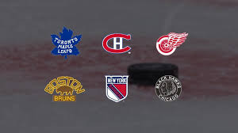
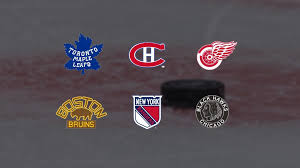

History of Hockey
History of the Sport
According to the International Ice Hockey Federation, the first game of organized ice hockey was played in 1875 in Montreal, Quebec. The main characteristics of hockey at this time have remained largely unchanged up until this day. The concept of the game being played on a large ice surface and using a puck is still the same, though some differences that might be seen include the amount of equipment which the players are required to wear, such as helmets and padding related equipment to help reduce injuries. The other big difference is the amount of rules, since there are a lot more restrictions on what players are allowed to do which have been implemented for player safety.
History of the NHL
The NHL was established in 1917, though it was a successor to the National Hockey Association, which was created in 1909. The NHA had 7 teams across Ontario and Quebec and was one of the first professional hockey leagues. When the NHL was created in 1917, there were only four teams. Two were from Montreal, and Toronto and Ottawa each had one team. Over the course of the next 25 years, the amount of teams in the league fluctuated, however by 1942 there were 6 teams, all of which are still in the league today. These teams became known as the Original Six, and they were composed of The Toronto Maple Leafs, the Boston Bruins, the Montreal Canadiens, The Chicago Blackhawks, the New York Rangers and the Detroit Red Wings. The Original Six were the only teams in the league until 1967, when the NHL started to expand. Since then, the league has gradually expanded and became larger and larger, until today where there are now 32 teams.
 
